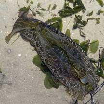
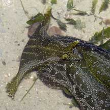
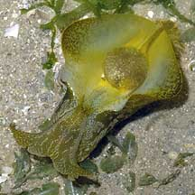
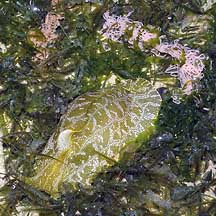
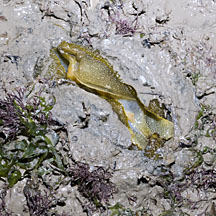
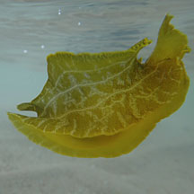

|
|
| sea hares text index | photo index |
| Phylum Mollusca > Class Gastropoda > sea slugs > Order Anaspidea |
| Geographic
sea hare Syphonota geographica Family Aplysiidae updated May 2020 Where seen? This chubby delicately patterned sea hare is seasonally common on our Northern shores, among seagrasses. Sometimes large numbers are seen, at other times, not at all. Often found half buried in the soft sediment, but sometimes crawling in the open, especially near sunrise or at night. It is also known as Paraplysia geographica. Features: 8-12cm. Body large, heavy and smooth. With two pairs of tentacles: one pair of oral tentacles forming flap at the front of the body. When compared with sea hares of the genus Aplysia, sea hares of the genus Syphonota have relatively small rhinophores which are close together and situated further back from the head almost between the long 'wings' or parapodia. When submerged, these wings are held high. It is said that they can swim with their parapodia. Usually olive or yellowish greenish with tiny white spots forming patterns with fine line horizontal lines along the body. Sometimes confused with the Spotted sea hare which has a pattern of tiny white spots that form patches and doesn't have fine horizontal lines. |
 Changi, Jun 05 |
 Tiny rhinophores near one another, held between parapodia. |
 Thin internal shell. Changi, Jun 07 |
| Baby sea hares: It lays long tangles of
pink egg strings among seaweeds and seagrasses. What does it eat? It is believed to feed on brown seaweeds, but in our observations, these animals seem more abundant during blooms of the green sea lettuce seaweed (Ulva sp.). |
|
 Laying egg string Changi, Jun 05 |
 Half buried in soft sediment. Changi, Apr 12 |
 Swimming sea hare! Cyrene Reef, Nov 11 |
| Geographic sea hares on Singapore shores |
On wildsingapore
flickr
|
| Other sightings on Singapore shores |
Links
|